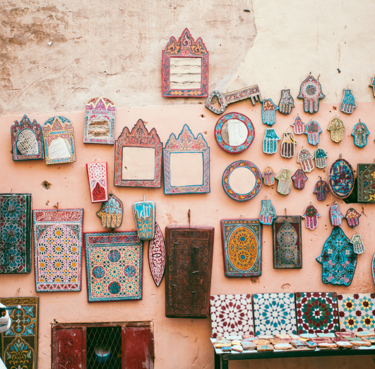
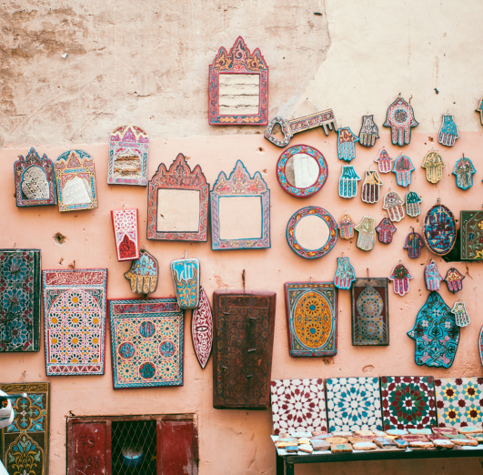
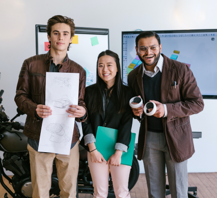
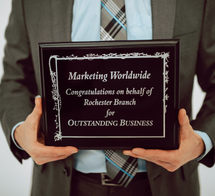

A SYNOPSIS OF THE PAST
The story of this clothing store begins in the early 1990s when it started out as a small thrift shop in a rundown neighborhood. The store was filled with old furniture, mats, and mirrors, and it catered mostly to low-income families. Despite its humble beginnings, the store quickly gained a loyal following among the locals, who appreciated the store's unique selection and affordable prices.
 

OUR ACCOMPLISHMENTS
1998
Joe's Store undergoes a major transformation, rebranding itself as a clothing store with a modern and stylish interior. The store's inventory is expanded to include trendy clothing items, and the grand opening is a huge success.
2007
Joe's Store receives certification from a well-known sustainability organization for its commitment to using environmentally-friendly materials and production methods. This certification attracts a new wave of customers who are looking for ethical and sustainable fashion options.
2015
Joe's Store receives a surprise visit from a well-known philanthropist, who is impressed by the store's commitment to sustainability and ethical fashion. The philanthropist presents the store with a generous donation that helps to expand the store's inventory and fund new initiatives, such as a community outreach program that provides job training and mentorship for underprivileged youth
2021
Joe's Store achieves its biggest milestone yet: worldwide certification. This certification recognizes Joe's Store as a leader in sustainable and ethical fashion and opens up new opportunities for the store to expand its reach and impact. Joe's Store's owner is invited to speak at several international conferences, and the store is featured in several high-profile media outlets.
